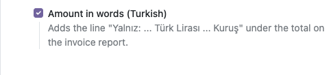
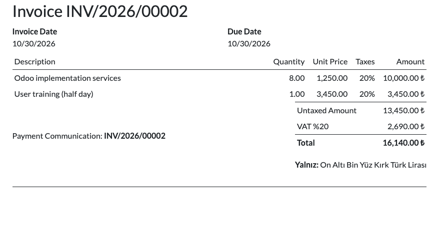

Turkish invoices traditionally repeat the total in words under the amount, starting with "Yalnız". This module adds that line to the standard invoice report.
Yalnız: Bin İki Yüz Otuz Dört Türk Lirası Elli Altı Kuruş


Odoo 19.0 (tested on Community). Depends only on account. No external
service is used. Licensed under LGPL-3. Questions and bug reports:
destek@odoo-tr.com
Fatura çıktısında toplam tutarın altına Türk faturalarında alışılmış "Yalnız: ..." satırını ekler. Odoo Community sürümünde çalışır; modülün ekranları Türkçe arayüzde Türkçe görünür.
Sorular ve hata bildirimleri: destek@odoo-tr.com